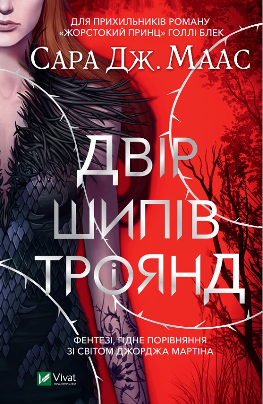

<!DOCTYPE html>
<html lang="en">
<head>
    <meta charset="UTF-8">
    <meta name="viewport" content="width=device-width, initial-scale=1.0">
    <title>Document</title>
</head>

</html>

<body>
<div class="fantasy-title">
    <h1> Фентезі</h1>
<p>Фентезі – це не просто жанр літератури, а цілий світ, сповнений магії, містичних істот та незвичайних пригод. Це втеча від буденності, занурення в атмосферу, де межі реального розмиваються, а фантазія не знає меж.</p>
</div>

<div class="fantasy-book1">
    
    <p>"Двір шипів і троянд" – це захоплива серія фентезі романів американської письменниці Сари Дж. Маас, яка завоювала серця мільйонів читачів по всьому світу. Історія розгортається навколо звичайної дівчини Фейри Арчерон, яка потрапляє в чарівний світ фейрі та опиняється втягнутою у вир інтриг, кохання та небезпечних пригод.</p>
</div>

<div class="fantasy-book2">
    
    <p>"Жорстокий принц" – це перша книга трилогії Сари Дж. Маас, яка перенесе тебе у чарівний і небезпечний світ фейрі. Ця історія сповнена інтриг, романтики та надприродних сил, і точно не залишить тебе байдужим.</p>
</div>

<div class="fantasy-book3">
    
    <p>"Дев'ятий Дім" Лі Бардуґо – це захопливий роман, який поєднує в собі елементи містики, детективу та університетського життя. Книга занурює читача в атмосферу престижного Єльського університету, який виявляється осередком таємних товариств, що займаються окультизмом і магією.</p>
</div>

<div class="fantasy-book4">
    
    <p>"Трон зі скла" – це захоплива серія фентезі романів американської письменниці Сари Дж. Маас, яка завоювала серця мільйонів читачів по всьому світу. Історія розповідає про життєвий шлях юної асасинки Селени Сардотін в Адарлені, де править жорстокий король.</p>
</div>

<div class="fantasy-book5">
    
    <p> "Жага" – це захоплива серія книг, написана Трейсі Вульф, яка переносить читача в загадковий світ елітної школи Кэтмир, розташованої серед снігів Аляски.</p>
</div>
</body>